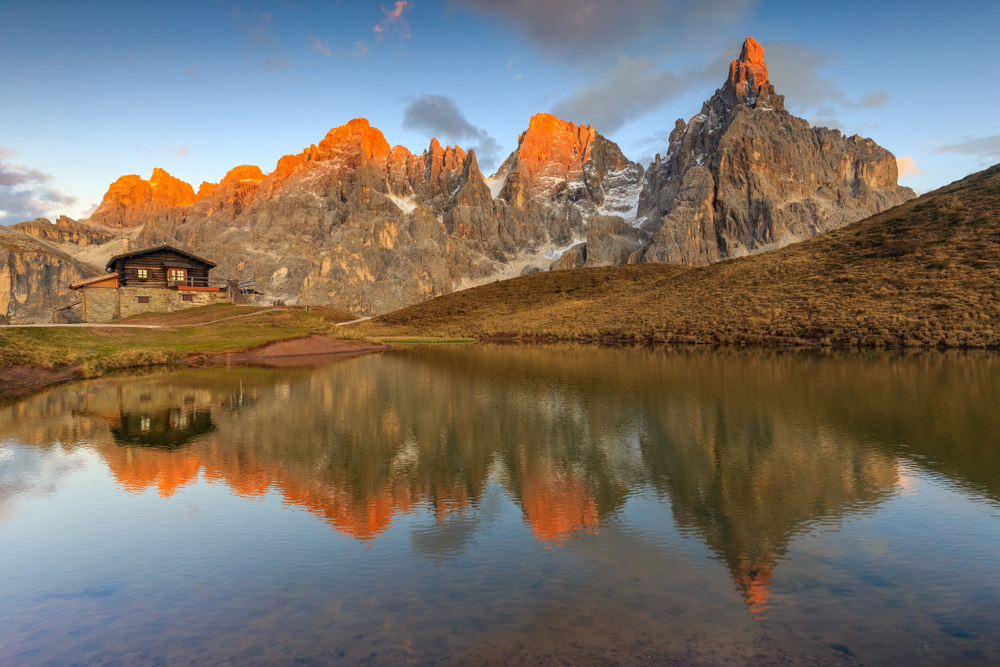
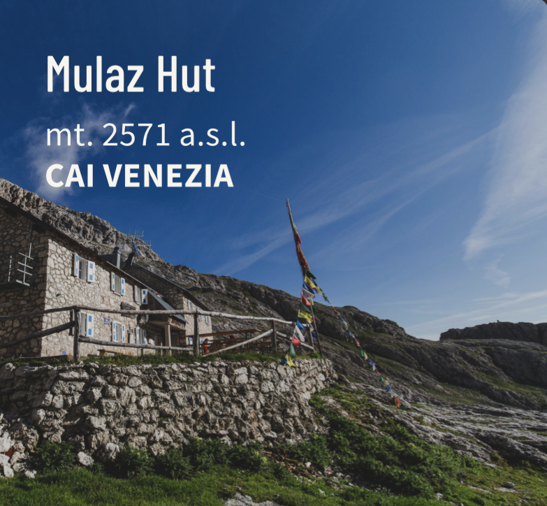
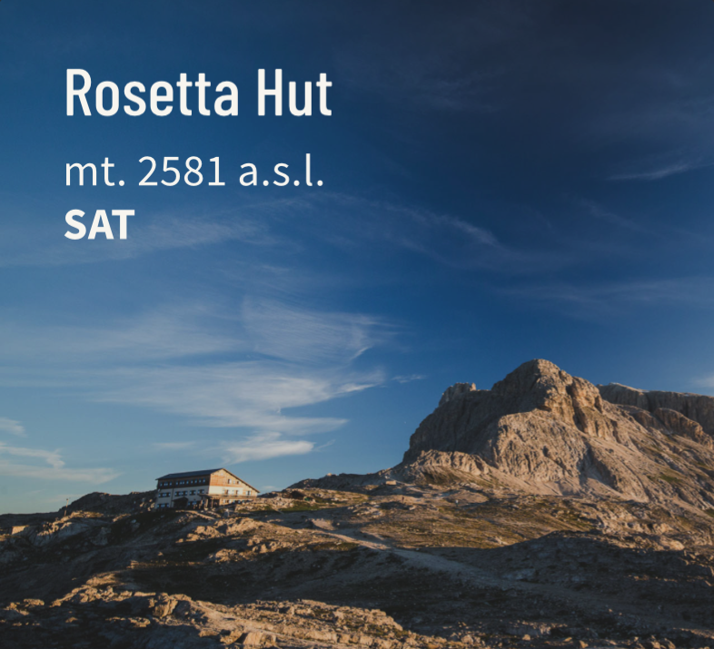
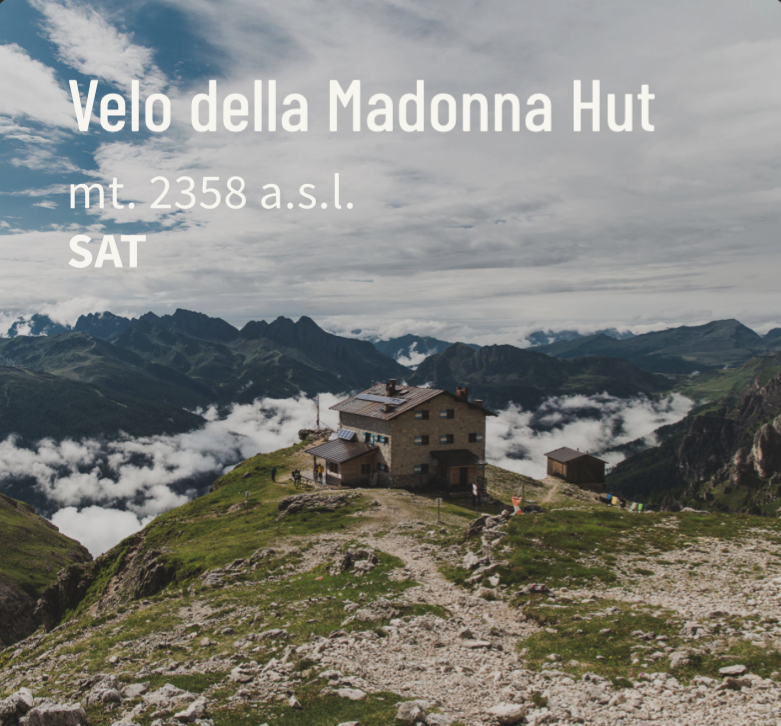
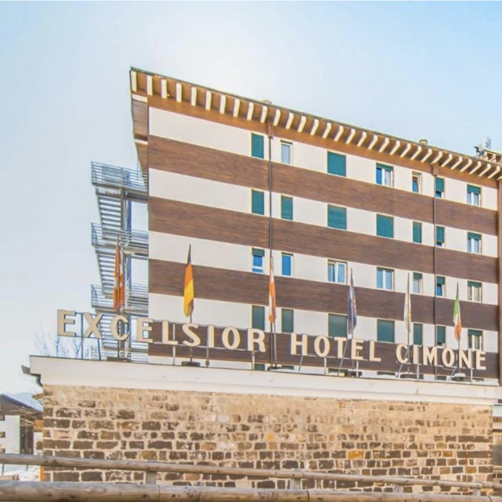

Eline en Jona gaan de Palaronda Trek Noord lopen!
Die is in totaal 49.6 km lang, we stijgen 3143 meter, we dalen 3568 meter
en we gaan er 4 dagen over doen. Rechts zien we Pale di San Martino, de berg waar de route overheen gaat.

Waar we gaan slapen

Day 1: we sleep at Rifugio Volpi al Mulaz!

Day 2: we sleep at Rifugio Rosetta!

Day 3: we sleep at Rifugio Velo Della Madonna!

Day 4: we sleep at Hotel Excelsior (als ik dat van Eline mag boeken)!
Wonderful place, great to get in touch with nature,
it seems you can touch with a finger the impressive rock walls in front of you,
the amazing Dolomites.